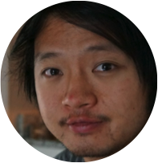
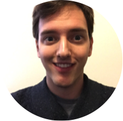

Our Team
|  | Francis Lee is a bioengineer working in mammalian synthetic biology. He is interested in the science and future of growing organisms. Francis received his undergraduate degree in Biochemistry from UIUC and a MSc in Biological Engineering from MIT. He was part of the early team at Ginkgo Bioworks as a Build Engineer, Opentrons as a software engineer, and he currently works in the Synthetic Biology Center at MIT. |
Marc-Jospeh Antonini is a Ph.D. student in Medical Engineering and Medical Physics at Harvard/MIT Health Sciences and Technology department. After earning a Mechanical and Industrial Engineering degree from Arts & Metiers ParisTech, Marc-Joseph pursued a M.Sc. in Biomedical Engineering at the Imperial College London, where he developed a low cost 3d printed prosthetic hand. He then spent a year in the Graybiel lab at MIT studying the influence of striatal interneurons on neural oscillation and the neuronal dysfunction in a new animal my model of Huntington's Disease. |
|
Ang Ang Cui is a Ph.D. student in Medical Engineering and Medical Physics at Harvard-MIT Health Sciences and Technology. With ten years of experience in programming/data analysis, she is interested in mining biological information from large datasets. Previously, she workedat Intel Programmable Solutions (Altera) as a software engineer. She received a BASc in Engineering Science - Electrical and Computer Engineering at the University of Toronto, and a MSc in Bioinformatics at Yale University. |
 | Robert Hinshaw graduated with a B.S. in Biomedical Engineering in 2015 from Washington University in St. Louis, and he is now a Medical Engineering and Medical Physics (MEMP) Ph.D. student in the Harvard-MIT Health Science & Technology program. His research at Massachusetts General Hospital and NASA Johnson Space Center involves culturing human neural tissues to investigate the effects of space-like radiation on the central nervous system. |